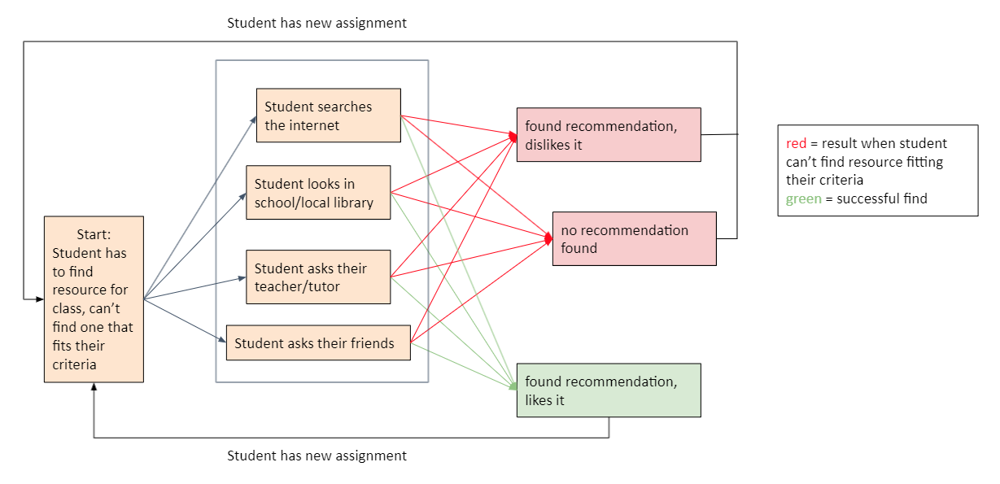
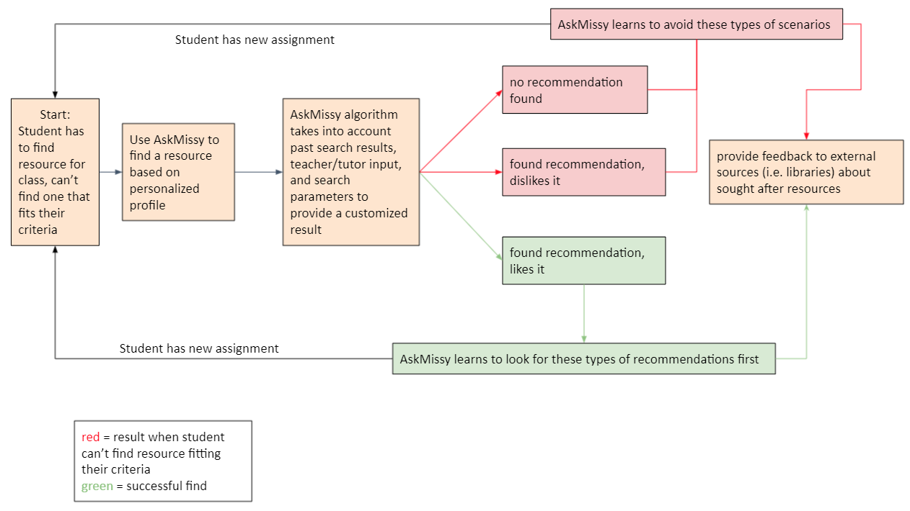

Students' performance is not optimized because of a lack of matericals tailored to their personal learning preferences.
When a student searches for reference material on thier own they can be overwhelmed by the number of options and can be hit with 'analysis paralysis'. 
Once a student has found a resource ther is no guarentee that the resource whould match their learning style. Therefore they must once again begin their search.
The AskMissy software application will help students find the resources necessary for them to bridge the gap between conventional and digital learning for a more personalized experience.
Rather than be faced with too many search options at once, the student can now do to AskMissy and input their details in a personalized profile to not only find a resource for their current subject, but find resources based on their preferences.
AskMissy will learn from the responses of the users, so that every time AskMissy finds a book, the results and feedback will make the next search even better.
A PROJECT RUN BY STUDENTS FROM